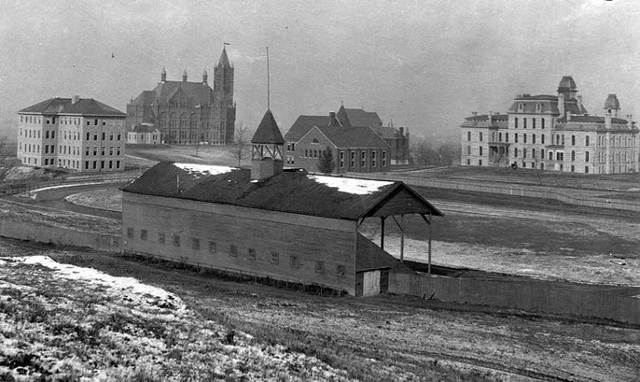
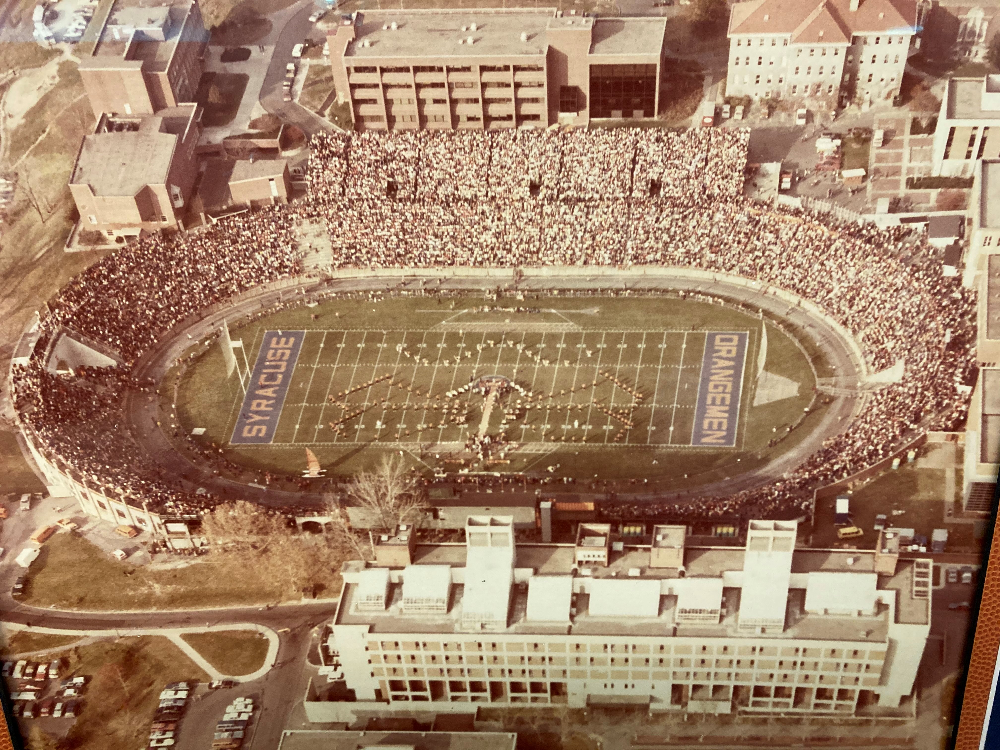
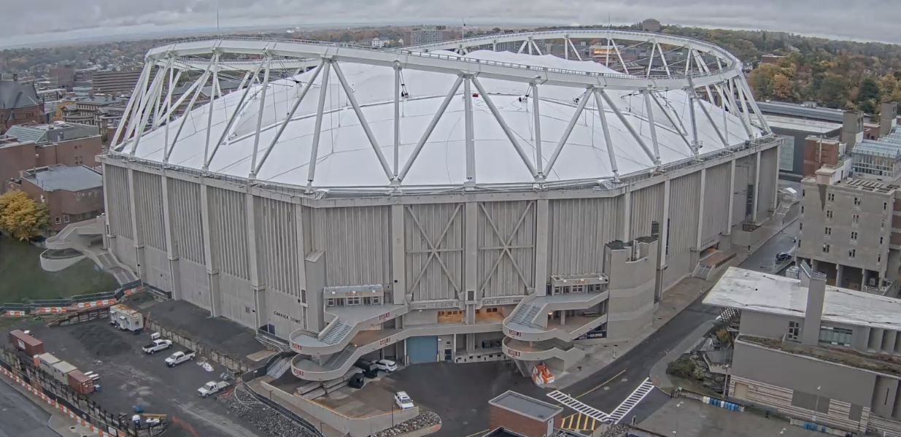

The Oval
https://www.pinterest.com/pin/378865387395088694/
This was the before-mentioned "dirt field." Syracuse played on "The Oval" from 1895-1907. To say this field was modest would be an understatement. It was basically just a dirt field with an oval around it (hence the name) where the team played it's games for just over a decade. Football itself as a sport was still in it's infancy, so the playing field was built to have the games on, without a whole lot of thought about the fan experience. Folks at this time wouldn't know it, but some pretty extraordinary venues would be erected on this very site in the decades to come.
Archbold Stadium
Now this is a stadium! Archbold was built in 1907 and replaced the oval in quite a fashion. As seen above, this was clearly built with more fans in mind and was quite a site to see! Arch was nestled right between a few buildings on campus and became a focal point of Syracuse Football, and they spent 73 years playing on this field. This was obviously an outdoor stadium, so someone must have thought that playing outside was just too inconvenient for some people based on the future designs of Syracuse Football venues!
The Carrier Dome

The iconic Carrier Dome was erected in 1980 and has been home to the Orange right up until this 2020 season. "The Dome" has hosted some incredible events over the past few decades and has been a hot spot for large concerts and massive events like monster truck rallies.There were countless big games and big memories for both the football and basketball teams in this venue. This earned the monicker "the loud house" because opponents would sometimes get flustered by the loud cheering and echoing off of the walls. Many folks in my generation and after will always have a special place in their hearts for the Carrier Dome and all of the memories that were created there.
The Stadium
We don't really know what to call this beauty, yet. There have been whispers of a naming dispute with the Carrier company, and most local beat writers and school officials have slyly ommitted the word "Carrier" when referring the new Dome. For now we will simply call it "The Stadium." This is "The Dome" 2.0. It is esentially a $120 million dollar home renovation of the old building, which includes a new permanent solid roof (no more bubble). The Stadium still has the old character of the dome but has included some very fancy new amenities including a new sound system and a state of the art jumbotron scoreboard in the middle of the field that even Jerry Jones would be impressed with! This stadium should be in this form for many decades or longer and will be home to many future great Syracuse University Football moments to come!